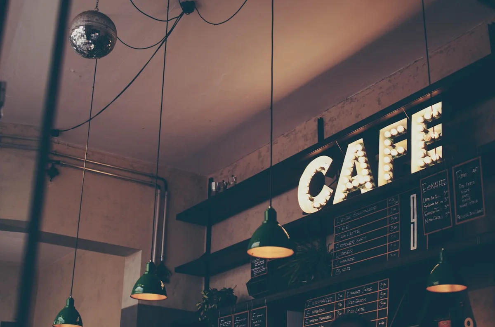
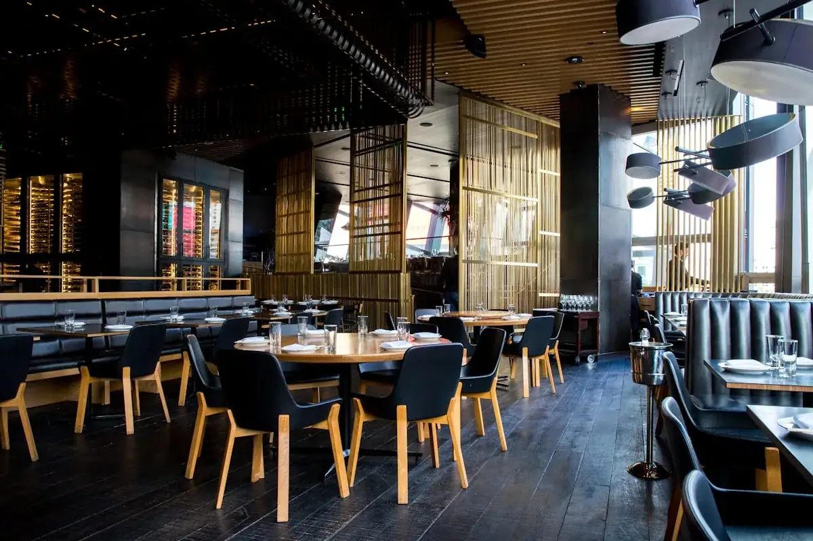

Arsitek bangunan komersial Malang menyediakan desain cafe, ruko, dan kantor yang mempertimbangkan efisiensi ruang bisnis sekaligus daya tarik visual bagi pengunjung.
Ringkasan Inti
- Cakupan produk meliputi desain interior dan eksterior cafe hingga ruko dan area perkantoran.
- Analisis RAB komersial disusun agar sesuai anggaran modal usaha klien.
- Ketepatan waktu pelaksanaan menjadi perhatian utama demi efisiensi operasional bisnis.
- Konsultasi proyek komersial dapat dimulai melalui kanal komunikasi yang tersedia.
Daftar Isi Artikel
Bagian berikut menjabarkan spesifikasi produk desain komersial, keuntungan menggunakan jasa arsitek untuk kebutuhan bisnis, serta cara memulai konsultasi proyek.
Apa Spesifikasi Produk Desain Bangunan Komersial Arsitek Malang?
Spesifikasi produk desain bangunan komersial arsitek Malang mencakup perancangan interior dan eksterior cafe, ruko, hingga area perkantoran sesuai kebutuhan operasional bisnis klien.
Setiap jenis bangunan komersial memiliki kebutuhan fungsional yang berbeda, sehingga pendekatan desain juga disesuaikan dengan karakter usaha yang dijalankan pemilik properti.
Desain Interior dan Eksterior Cafe Kekinian
Desain interior dan eksterior cafe dirancang untuk memaksimalkan kapasitas pengunjung sekaligus menciptakan suasana yang mendukung pengalaman pelanggan.
Tata letak umumnya mempertimbangkan alur sirkulasi pengunjung, penempatan area kasir dan dapur, serta zona duduk yang nyaman. Selain aspek fungsional, tampilan visual cafe juga menjadi perhatian karena berkaitan langsung dengan daya tarik bisnis di media sosial dan minat kunjungan pelanggan baru.
Perencanaan Arsitektur Ruko dan Area Perkantoran
Perencanaan arsitektur ruko dan perkantoran berfokus pada efisiensi ruang kerja sekaligus tampilan visual yang menunjang nilai jual properti.
Desain ruko umumnya mempertimbangkan pembagian fungsi antara area usaha di lantai bawah dan area tempat tinggal atau kantor di lantai atas. Sementara itu, desain perkantoran lebih menekankan pada tata letak ruang kerja yang mendukung produktivitas serta kenyamanan karyawan dan tamu bisnis.

Penataan desain interior dan eksterior cafe kekinian dengan alur sirkulasi efisien.Apa Keuntungan Menggunakan Jasa Arsitek Terbaik di Malang untuk Bisnis?
Keuntungan menggunakan jasa arsitek terbaik di Malang untuk bisnis meliputi penyusunan RAB komersial yang presisi serta jaminan ketepatan waktu pelaksanaan proyek rancang bangun.
Kedua aspek ini berkaitan erat dengan keberlangsungan operasional bisnis, karena keterlambatan atau pembengkakan biaya dapat berdampak langsung pada rencana pembukaan usaha klien.
Analisis RAB Komersial yang Presisi
Analisis RAB komersial yang presisi membantu pelaku usaha menyusun anggaran modal secara realistis sebelum memulai konstruksi.
Perhitungan ini umumnya mencakup biaya material, tenaga kerja, hingga estimasi waktu pengerjaan, sehingga pemilik usaha memiliki gambaran menyeluruh mengenai total investasi yang dibutuhkan.
Ketepatan RAB juga membantu menghindari perubahan anggaran yang signifikan di tengah proses pembangunan.
Ketepatan Waktu Pelaksanaan Rancang Bangun
Ketepatan waktu pelaksanaan menjadi nilai penting bagi bisnis karena keterlambatan pembangunan dapat menunda operasional dan berdampak pada potensi pendapatan usaha.
Arsitek yang berpengalaman menangani proyek komersial umumnya memiliki sistem pengawasan proyek yang membantu menjaga jadwal pelaksanaan tetap sesuai rencana awal, meski tetap mempertimbangkan faktor lapangan yang dapat memengaruhi durasi pengerjaan.

Perencanaan arsitektur ruko dan gedung kantor komersial bernilai jual tinggi.Bagaimana Cara Menghubungi Arsitek Malang untuk Proyek Komersial?
Konsultasi proyek komersial dengan arsitek Malang dapat dimulai dengan menyampaikan kebutuhan bisnis, jenis bangunan, dan estimasi anggaran melalui kanal komunikasi yang tersedia.
Pemilik usaha disarankan menyiapkan gambaran kebutuhan ruang serta target waktu operasional sebelum sesi konsultasi, agar diskusi mengenai konsep desain dan estimasi biaya dapat berjalan lebih efisien.
Pertanyaan yang Sering Diajukan
Rencanakan Bangunan Komersial & Cafe Anda!
Diskusi konsep desain, alur sirkulasi usaha, dan estimasi RAB komersial bersama tim profesional Arsitek Malang.

Muhammad Musyaffa
Arsitek Principal & Lead Structural Estimator berpengalaman 10+ tahun di Malang Raya, spesialis desain tropis modern, RAB presisi, dan legalitas PBG/SIMBG.